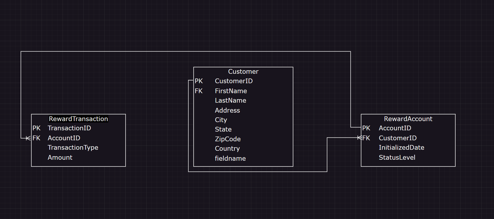
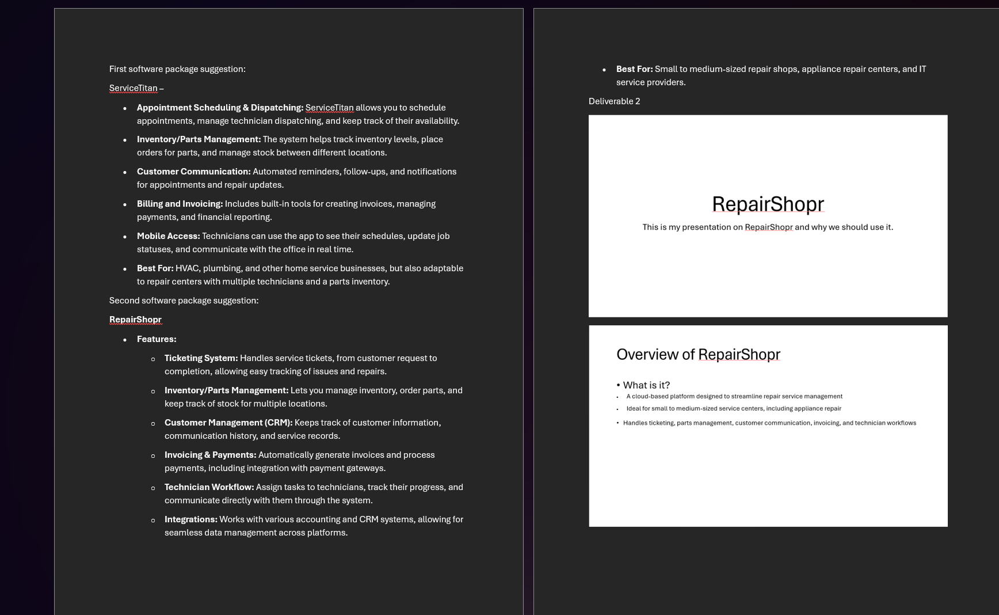
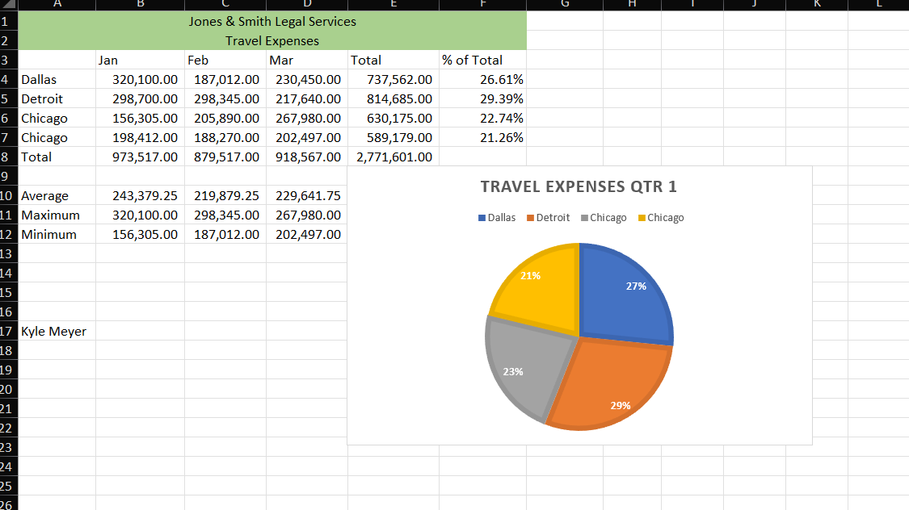

Intro to Computers & Programming
This course gave me a better understanding of how computer hardware, software, and programming fit together. It also introduced basic command-line skills, problem-solving methods, cybersecurity, and version control.
Topics and skills covered
- Computer components, operating systems, and managing files and folders.
- Using command-line tools and understanding file paths.
- Planning solutions with flowcharts, pseudocode, and programming logic.
- Basic JavaScript concepts, security practices, and the purpose of GitHub.
Course example: Intro to Computers & Programming — programming exercise
Database 1
In Database 1, I learned how relational databases are organized and how SQL can be used to find useful information. We covered creating database diagrams, understanding table relationships, and writing queries that work with data from one or more tables.
Topics and skills covered
- Table design, field data types, primary keys, and foreign keys.
- Entity relationships and the cardinality between tables.
- SQL SELECT statements with WHERE, sorting, and aggregate functions.
- GROUP BY, HAVING, JOINs, subqueries, and UNION queries.
Course example: Database 1 — rewards database diagram

Systems Analysis & Design
This course focused on how organizations plan, design, and improve information systems. I learned about the system development life cycle and why gathering requirements, understanding business needs, and testing are important parts of a successful project.
Topics and skills covered
- The system development life cycle: planning, analysis, design, implementation, and support.
- Requirements gathering, business cases, and project risks.
- Using diagrams and models to describe how a system works.
- System testing, documentation, security, and maintenance.
Course example: Systems Analysis & Design — software comparison

Microsoft Excel
In this course, I worked with spreadsheets to organize information, perform calculations, and present data clearly. Excel is useful for checking data and identifying patterns before sharing results with others.
Topics and skills covered
- Creating, editing, and formatting worksheets.
- Using formulas and functions for calculations.
- Applying conditional formatting to make data easier to review.
- Creating charts and interpreting trends.
Course example: Microsoft Excel — travel expense worksheet

What Comes Next?
I've added one assignment example for each Block 1 course. I'll continue adding new work and brief explanations as the portfolio grows.
Course descriptions were prepared using the CVTC IT – Data & Analytics Specialist course competencies document.